정보통신산업기사 (2004-05-23 기출문제)
1과목: 디지털전자회로
1. 다음의 FET에 대한 설명 중 틀린 것은?
- 입력임피던스가 크다.
- 다수캐리어에 의해서만 동작한다.
- 게이트의 전류에 의해서 드레인전류가 제어된다.
- 접합트랜지스터보다 잡음이 적다.
(정답률: 알수없음)

2. 2진수 1100을 그레이 코드 (gray code)로 바꾼 것은?
- 1000
- 1101
- 1010
- 1001
(정답률: 알수없음)
3. 동기식 카운터의 설명 중 옳은 것은?
- 리플 카운터라고도 한다.
- 플립-플롭의 단수와 동작 속도와는 무관하다.
- 전자계산기 회로에는 별로 사용되지 않는다.
- 전단의 출력이 후단의 트리거(trigger)입력이 된다.
(정답률: 알수없음)
4. 슈미트 트리거(Schmitt trigger) 회로의 용도 설명 중 틀린 것은?
- 구형파 펄스 발생회로로 사용된다.
- 임의의 파형에서 그 크기에 해당하는 펄스폭의 구형파를 얻기 위해서 사용된다.
- A - D 변환회로로 사용된다.
- D - A 변환회로로 사용된다.
(정답률: 알수없음)
5. 다음 콜피츠 발진회로의 발진주파수는 몇[Hz]인가?
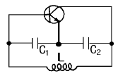
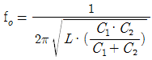
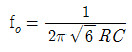
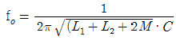
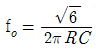
(정답률: 40%)
6. 다음 중 주파수 변조방식의 특징이 아닌 것은?
- 전송로의 레벨 변동 및 잡음에 강하다.
- 평형 변조기를 사용한다.
- AFC회로가 필요하다.
- 변별기를 이용하여 복조한다.
(정답률: 알수없음)
7. 그림과 같은 회로의 출력 논리식이 아닌 것은?
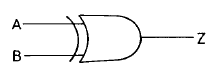
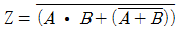
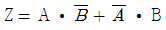
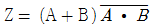
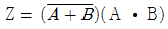
(정답률: 알수없음)
8. C급 증폭기의 특징이 아닌 것은?
- 효율이 높다.
- 출력단에 공진회로가 필요하다.
- 직선성이 좋다.
- 고출력용으로 많이 사용된다.
(정답률: 알수없음)
9. 다음 Karnaugh map을 간략화 시킨 결과는?
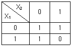
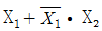
- X1 + X2
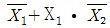
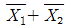
(정답률: 알수없음)
10. 진폭(AM)변조에서 반송파 주파수(fc)가 1000[㎑]이고 신호파 주파수(fs)가 1[㎑]일때 주파수 대역폭(B)은?
- 1[㎑]
- 2[㎑]
- 1000[㎑]
- 2000[㎑]
(정답률: 알수없음)
11. 논리식 A(A+B+C)를 간단히 하면 어느 값과 같은가?
- 1
- 0
- B+C
- A
(정답률: 알수없음)
12. 다음 연산 증폭기에서 입출력 전압 관계식은?
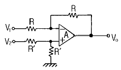
- Vo = V2-V1
- Vo = V1+V2
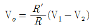
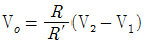
(정답률: 알수없음)
13. D형 Latch 회로의 주용도는?
- 2진 계수기
- 즉시 전시기
- 일시기억장치
- 정수연산장치
(정답률: 알수없음)
14. 레이스(race) 현상을 방지하기 위하여 사용되는 플립-플롭 회로는?
- JK 플립-플롭
- T 플립-플롭
- MS 플립-플롭
- D 플립-플롭
(정답률: 알수없음)
15. B급 푸시풀 전력 증폭기는 다음 어느 것을 제거 하는가?
- 기본파
- 우수 고조파
- 기수 고조파
- 모든 고조파
(정답률: 알수없음)
16. JK 플립플롭을 이용하여 D형 플립플롭을 만들려면?
- J의 입력을 인버터를 통해 K에 연결한다.
- J와 K를 동일 입력으로 한다.
- Q의 입력을 J에 궤환시킨다.
- K의 입력을 J에 궤환시킨다.
(정답률: 알수없음)
17. 전력증폭기에서 B급 push-pull로 동작 시켰을 때 장점은?
- 출력 효율이 높고, 일그러짐이 적다.
- 높은 주파수를 증폭하는데 적당하다.
- 전압 이득을 크게 할 수 있다.
- 전도 지연 특성이 개선된다.
(정답률: 알수없음)
18. LC 동조 발진기에 비해 수정 발진기의 특징으로 잘못 설명한 것은?
- 안정도가 높다.
- Q가 비교적 크다.
- 발진 주파수를 가변 하기가 곤란하다.
- 저주파 발진기로 적합하다.
(정답률: 알수없음)
19. 권선비가 1: 3인 전원 변압기를 통하여 실효치 200[V]의 교류입력이 전파 정류되면 평균치는 얼마인가?
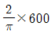
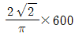
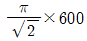
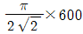
(정답률: 알수없음)
20. 트랜지스터의 스위칭 시간에서 turn - off 시간은?
- 하강시간
- 상승시간 + 지연시간
- 축적시간
- 축적시간 + 하강시간
(정답률: 알수없음)
2과목: 정보통신기기
21. 통신제어장치에 대한 설명이 옳지 않은 것은?
- 회선과 컴퓨터사이의 데이터 입·출력을 정한다.
- 데이터 전송처리를 전담한다.
- 수신된 데이터를 연산처리한다.
- 회선의 에러를 검출한다.
(정답률: 알수없음)
22. 멀티포인트(multi-point)모뎀에서 폴링(polling)할 때 발생되는 시간지연요소 중 잘못 설명한 것은?
- 모뎀 내부에서의 시간 지연
- 터미널 자체에서의 시간 지연
- 컴퓨터와 터미널 사이의 거리에 따른 시간 지연
- 반송파 발생에 따른 시간 지연
(정답률: 알수없음)
23. ISDN의 기본 인터페이스 채널 구조는?
- 23+D
- 30B+D
- 2B+D
- 8B+D
(정답률: 알수없음)
24. 정보전송기기중 리피터(Repeater)의 설명으로 가장 옳은 것은?
- 멀티 네트워크 케이블을 접속하는 기기이다.
- 전기적으로 신호를 증폭시키는 기능을 가진다.
- 데이터링크계층 레벨의 데이터를 전송한다.
- 프레임이나 패킷의 내용을 처리하여 분석하는 기능을 가진다.
(정답률: 알수없음)
25. 다음 중 모뎀 수신부의 특징이 아닌 것은?
- 복조기에서는 아날로그 입력신호를 원래의 디지털 신호로 변환한다.
- DTE로부터 온 디지털 신호의 전송을 위하여 스크램블링 과정을 거친다.
- 시간회로는 수신출력 디지털 펄스를 만들어내기 위한 일종의 타이밍 추출회로로 주로 동기식 모뎀에서 사용한다.
- 통신회선을 통해 들어오는 아날로그 신호는 대역제한여파기, 등화기, AGC를 거쳐 적절한 신호의 크기로 만들어지고 복조기로 입력된다.
(정답률: 19%)
26. 데스크톱 화상회의 시스템에서 화상신호를 부호화 및 복호화 하는 장치는?
- 라우터
- 컴퓨터
- 모템
- 코덱
(정답률: 알수없음)
27. 팩시밀리의 송신 주사방법중 기계주사 방법이 아닌 것은?
- 고체주사
- 원통주사
- 평면주사
- 반원통주사
(정답률: 알수없음)
28. 케이블텔레비젼(CATV)의 설명과 관계가 먼 것은?
- 컴퓨터와 접속하여 정보제공을 시스템화 할 수 있다.
- 단지 특정자 상호간에 텔레비젼방송의 재방송 뿐만 아니라 특정지역 감시를 한다.
- 쌍방향 전송기능을 부가 하여 다채로운 서비스를 제공할 수 있다.
- 방송수신이 곤란한 난시청지역의 해결방안이다.
(정답률: 알수없음)
29. 다음중 집중화기에 대한 설명으로 옳지 않은 것은?
- 저속의 장치들이 하나의 속도가 빠른 회선을 공유하여 사용할 수 있도록 해주는 기기이다.
- 여러 가지 다른 속도의 동기식 데이터들을 한데 묶어 광대역 전송이 가능하도록 되어있다.
- 통신량이 많을 경우 적절한 운영이 가능하다.
- 다중화기보다 복잡하게 많은 기능을 수행하며 주로 동기식에 사용한다.
(정답률: 알수없음)
30. 비디오 텍스의 하드웨어 구성요소가 아닌 것은?
- 중앙정보센터
- 헤드엔드
- 전기통신망
- 정보입력단말기
(정답률: 알수없음)
31. 통신위성의 통신기기가 아닌 것은?
- 안테나(Antenna)
- 태양전지
- 중계기(Transponder)
- 송,수신기
(정답률: 알수없음)
32. FM 이 AM 보다 충격성 잡음에 강한 이유로 가장 타당한 것은?
- 진폭제한기를 사용하기 때문이다.
- 스켈치 회로를 사용하기 때문이다.
- 대역폭이 넓기 때문이다.
- IDC회로를 사용하기 때문이다.
(정답률: 알수없음)
33. 현재 텔레비젼 방송에서 주로 사용되는 주파수대는?
- SHF
- HF
- VHF
- MF
(정답률: 알수없음)
34. 교환기에서 신호의 기능이 아닌 것은?
- 감시기능(Supervision Function)
- 전송기능(Transmission Function)
- 운용기능(Operation Function)
- 선택기능(Selection Function)
(정답률: 알수없음)
35. PC를 LAN에 연결하여 고속의 데이터 송수신이 가능하도록 해주는 장치로 PC내에 실장 되는 것은?
- NIC(Network Interface Card)
- MODEM(Modulator & Demodulator)
- DSU(Digital Service Unit)
- APK(Amplitude Phase Keying)
(정답률: 알수없음)
36. 시분할 다중화의 설명으로 옳지 않은 것은?
- 하나의 전송로를 일정한 시간으로 나누어 다중화하는 기법이다.
- 시간으로 다중화하므로 사용 주파수대역이 없다.
- 동기식과 비동기식 시분할 다중화 기법이 있다.
- point-to-point 방식의 구성에 적합하다.
(정답률: 알수없음)
37. 전자교환기에서 시분할방식을 사용하는 이유로 타당하지 않은 것은?
- 가입자와의 정합을 용이하게 하기 위해
- 전자소자의 발달로 대용량이 가능하기 때문
- 디지털 전송기술의 발달로 인해
- 종합정보통신망 구성이 유리하기 때문
(정답률: 알수없음)
38. 정보통신 시스템의 단말장치에 사용되는 디스플레이 소자가 아닌 것은?
- 디지타이저
- 음극선관
- 플래즈마
- 액정
(정답률: 60%)
39. 위성통신의 장점이 아닌 것은?
- 광역성
- 이동성
- 동보성
- 지연성
(정답률: 알수없음)
40. 비디오텍스에서 가장 높은 해상도의 문자정보를 제공하고, 문자나 그림정보를 미리 점의 형태로 분할하고 이를 단말 장치를 통하여 전송하는 방식은?
- 알파 지오메트릭 방식
- 알파 모자이크 방식
- 알파 포토 그래픽 방식
- 알파 스펙트럼 방식
(정답률: 30%)
3과목: 정보전송개론
41. 광섬유의 유리중에 포함된 Fe나 Cu등의 천이금속이나 수분 등의 불순물에 의하여 일어나는 전송손실은?
- 접속에 의한 손실
- 계면손실
- 흡수손실
- 산란손실
(정답률: 알수없음)
42. 변조된 신호의 bit rate와 baud rate가 같은 디지털 변조 방식은?
- BPSK
- QPSK
- 8PSK
- 16PSK
(정답률: 알수없음)
43. 다음 전송 제어 문자중에서 상대국으로부터의 응답을 요구하는 것은?
- EOT
- ENQ
- ACK
- NAK
(정답률: 알수없음)
44. 광섬유 통신의 근본 원리는 빛의 무슨 성질을 이용한 것인가?
- 굴절성
- 전반사성
- 직진성
- 투과성
(정답률: 알수없음)
45. 상호변조왜곡(intermodulation distortion)의 방지대책으로 적절하지 않은 것은?
- 다중화 방식으로 FDM을 사용한다.
- 필터를 이용하여 통과대역밖의 신호를 잘라낸다.
- 입력신호의 크기를 너무 크게 하지 않는다.
- 송수신장치 및 전송매체를 선형영역에서 동작시킨다.
(정답률: 37%)
46. "0"에서 "1"로 변화할 때 (+)전위, "1"에서 "0"으로 변화할 때 (-)전위, "1"에서 "1" 또는 "0"에서 "0"과 같이 변화하지 않을 때 "0"전위로 전송하는 전송신호방식은?
- NRZ
- AMI
- Dicode
- CMI
(정답률: 알수없음)
47. 전진 에러 수정 코드의 종류가 아닌 것은?
- Block Code
- Convolutional Code
- Hamming Code
- HDB3 code
(정답률: 알수없음)
48. HDLC 프레임 중 프레임검사 시퀀스(FCS)는 몇 비트로 구성되는가?
- 4
- 8
- 16
- 24
(정답률: 알수없음)
49. 송신측에서 연속적으로 전송한 데이터 블럭에 대해 에러가 검출되면 에러가 발생한 블럭 이후의 모든 블럭을 재전송하는 에러제어 방식은?
- 반송-N 블럭(go-back-N)방식
- 선택적(selective)재전송 방식
- 정지-대기(stop-and-wait)방식
- 적응적(adaptive)방식
(정답률: 알수없음)
50. 전송에서 다중화 방식을 사용하는 이유를 가장 적합하게 설명한 것은?
- 누화를 줄이기 위해
- 손실과 간섭을 줄이기 위해
- 전송장치를 단순화 하기 위해
- 전송매체를 효율적이고 경제적으로 이용하기 위해
(정답률: 알수없음)
51. 변조에 대한 다음 설명중 잘못된 것은?
- 변조를 수행하는 것은 장거리 전송을 하기 위해서이다.
- 변조신호에 따라 반송파의 진폭 또는 주파수 또는 위상을 변화시켜 전송하는 것이다.
- 시분할 다중통신을 행하기 위해 필요하다.
- 변조신호의 스펙트럼을 높은쪽으로 옮기는 조작을 말한다.
(정답률: 알수없음)
52. 북미 표준(T1) PCM시스템의 전송율로 적합한 것은?
- 56Kbps
- 64Kbps
- 1.544Mbps
- 2.048Mbps
(정답률: 알수없음)
53. 다음 동축 케이블에서 특성 임피던스가 가장 높은 것은? (단, d는 내부도체의 직경, D는 외부도체의 직경이다.)
- d=6[mm], D=8[mm]
- d=2[mm], D=8[mm]
- d=1[mm], D=3[mm]
- d=4[mm], D=11[mm]
(정답률: 알수없음)
54. 동기식 전송방식에 해당하지 않는 것은?
- 데이터 블록의 앞쪽에 반드시 동기문자가 온다.
- 글자들 사이에 휴지시간이 없다.
- 송신측과 수신측이 동기를 이루어야한다.
- 저속의 전송속도에 주로 사용한다.
(정답률: 알수없음)
55. S(t)= COS 6πfot 인 신호를 표본화하고자 한다. 원신호를 재생하기 위한 표본화 주파수 (fs)의 조건은?
- fs ≥ fo
- fs ≥ 2fo
- fs ≥ 6fo
- fs ≤ 2fo
(정답률: 알수없음)
56. 채널의 대역폭과 전송할 수 있는 데이터양과는 어떤 관계가 성립하는가?
- 전송할 수 있는 데이터양은 채널의 대역폭에 비례한다.
- 전송할 수 있는 데이터양은 채널의 대역폭에 반비례한다.
- 전송할 수 있는 데이터양은 채널의 대역폭의 제곱에 비례한다.
- 전송할 수 있는 데이터양은 채널의 대역폭의 제곱에 반비례한다.
(정답률: 알수없음)
57. 이동통신시스템의 구성요소가 아닌 것은?
- 무선교환국
- 무선기지국
- 트랜스폰더
- 무선전화단말장치
(정답률: 50%)
58. 다중화 방식중에서 사용되지 않는 타임 슬롯(time slot)들이 낭비되는 것을 효율적으로 이용하기 위하여 데이터를 송신할 단말장치에만 타임 슬롯을 동적으로 할당하는 방식은?
- 동기 시분할 다중화
- 비동기 시분할 다중화
- 주파수 분할 다중화
- 코드 분할 다중화
(정답률: 알수없음)
59. 광파이버의 광학적 파라메터에 속하는 요소는?
- 외경
- 편심률
- 비원률
- 개구수
(정답률: 25%)
60. 데이터 링크 제어절차(HDLC)에 대한 설명중 잘못된 것은?
- 고속 데이터 전송이 가능하다.
- 전송 효율이 우수하다.
- 단향, 반이중, 전이중 전송 방식이 모두 가능하다.
- Byte 방식 프로토콜로서 시스템의 변경 및 확대가 어렵다.
(정답률: 64%)
4과목: 전자계산기일반 및 정보설비기준
61. 정보통신공사업자외의 자가 시공할 수 있는 경미한 공사에 해당하지 않는 것은?
- 간이무선국의 설치공사
- 유선방송시설의 증설공사
- 실험국의 무선설비 설치공사
- 아마추어국의 무선설비 설치공사
(정답률: 알수없음)
62. 2개 이상의 프로그램을 1대의 컴퓨터로 병행 처리 하는 방법을 무엇이라고 하는가?
- 온-라인 즉시처리
- 다중 프로그래밍
- 시 분할처리
- 순서처리
(정답률: 알수없음)
63. 컴퓨터 시스템에서 기억 용량이 4,096바이트를 가진 기억장치에서는 몇 비트의 번지 필드(address field)가 필요한가?
- 10bit
- 11bit
- 12bit
- 13bit
(정답률: 알수없음)
64. 부동소수점 수가 기억장치내에 있을 때 비트를 필요로 하지 않는 것은?
- 소수점
- 부호
- 소수
- 지수
(정답률: 알수없음)
65. ASCII 코드에서 문자 표시는 몇 비트 (bit)로 구성되어 있는가? (단, Parity Bit는 제외)
- 5
- 6
- 7
- 8
(정답률: 알수없음)
66. 정보화촉진 기본계획의 수립 사항이 아닌 것은?
- 정보화촉진등에 대한 시책의 기본 방향
- 정보통신기반의 고도화에 관한 사항
- 정보화촉진등과 관련된 국제협력에 관한 사항
- 정보화촉진등에 관한 기술지원 및 유지보수에 관한 사항
(정답률: 알수없음)
67. 전화망을 이용한 데이터통신의 ITU-T 표준안의 계열은?
- V시리즈
- T시리즈
- X시리즈
- I시리즈
(정답률: 30%)
68. 다음 중 통신위원회의 설치 목적에 맞는 것은?
- 전기통신의 표준화에 관한 업무추진
- 전기통신사업자간 분쟁의 재정
- 불온통신의 근절 및 건전한 정보문화 확립
- 전기통신기자재의 형식승인에 관한 심의
(정답률: 알수없음)
69. 4가지 조건이 동시에 만족되면 교착 상태가 발생된다. 이 조건이 아닌 것은?
- 상호 배제(mutual exclusion)
- 점유와 대기(hold and wait)
- 선점(preemption)
- 환상형 대기(circular wait)
(정답률: 알수없음)
70. 전기통신기술진흥을 위한 시행계획 수립시 포함되지 않는 사항은?
- 전기통신기술의 표준화
- 전기통신기술의 연구, 개발
- 새로운 통신방식의 채택
- 전기통신의 질서유지
(정답률: 알수없음)
71. 어큐뮬레이터의 설명 중 가장 타당한 것은?
- 명령 시행 결과를 감시하는 장소
- 연산 결과를 일시적 기억하는 장소
- 명령의 순서를 기억하는 장소
- 명령어를 해독하는 장소
(정답률: 알수없음)
72. 전기통신망에 접속되는 단말기기 및 그 부속 설비를 무엇이라 하는가?
- 전원설비
- 단말장치
- 정보통신설비
- 입.출력장치
(정답률: 알수없음)
73. 주기억장치의 메모리 용량보다 큰 프로그램을 사용 할 수 있는 메모리 이용 기법은?
- Cache Memory
- Associative Memory
- Segment Memory
- Virtual Memory
(정답률: 알수없음)
74. 아날로그 텔레비젼(NTSC 방식) 중계회선의 전송기준에서 영상신호의 화면상 주사선수는?
- 425
- 525
- 625
- 1025
(정답률: 알수없음)
75. 전기통신설비에 관한 기술기준은 어느 법령으로 규정하고 있는가?
- 대통령령
- 정보통신부령
- 과학기술부령
- 국무총리령
(정답률: 알수없음)
76. 다음 연산자를 혼합하여 연산할 때 연산 순서를 가장 옳게 표시한 것은?
- 산술식 → 관계식 → 논리식
- 산술식 → 논리식 → 관계식
- 관계식 → 산술식 → 논리식
- 관계식 → 논리식 → 산술식
(정답률: 알수없음)
77. 다음 중 잡음전압이 얼마를 초과하거나 초과할 우려가 있는 경우 전력유도 방지조치를 하여야 하는가?
- 1[mV]
- 10[mV]
- 1[V]
- 10[V]
(정답률: 알수없음)
78. 현재 명령어의 오퍼랜드 내용과 프로그램 카운터의 내용을 더하여 유효주소를 결정하는 주소 지정 방식은?
- 베이스 레지스터 주소 지정 방식
- 상대 주소 지정 방식
- 인덱스 주소 지정 방식
- 변위 주소 지정 방식
(정답률: 알수없음)
79. 컴퓨터의 연산은 사용되는 자료의 수에 따라 Unary 연산과 Binary 연산으로 구분한다. 이때 Binary 연산은 어느 것인가?
- AND
- ROTATE
- SHIFT
- COMPLEMENT
(정답률: 알수없음)
80. 감리원의 배치기준 설명 중 틀린 것은?
- 총공사 금액 60억이상 80억미만 공사 : 특급 감리원
- 총공사 금액 30억이상 70억미만인 공사 : 고급 감리원 이상의 감리원
- 총공사 금액 5억이상 30억미만인 공사 : 중급 감리원 이상의 감리원
- 총공사 금액 5억미만의 공사 : 초급 감리원 이상의 감리원
(정답률: 알수없음)
FET의 동작 원리는 게이트와 드레인 사이에 형성된 PN 접합의 전자를 게이트 전압에 의해 제어하는 것입니다. 게이트 전압이 높아지면 PN 접합의 전자가 게이트 쪽으로 이동하여 채널을 형성하고, 이를 통해 드레인 전류가 흐르게 됩니다. 따라서 게이트 전류에 의해 드레인 전류가 제어되는 것입니다.
입력임피던스가 크다는 것은 게이트와 소스 사이의 저항이 크다는 것을 의미합니다. 이는 입력 신호가 게이트에 인가될 때 신호가 손실되지 않고 전달되는 것을 보장합니다.
접합트랜지스터보다 잡음이 적다는 것은 FET이 내부 잡음이 적고, 외부 잡음에 대한 감도가 낮기 때문입니다. 이는 고주파 신호 처리에 유리합니다.